Nella seconda sessione del corso, allo Stadio Renzo Barbera, un radiologo muscoloscheletrico, arrivato quella mattina da Madrid, ha parlato di ecografia delle lesioni muscolari dello sportivo. Accanto all’eco ha messo sempre la risonanza, perché chi gestisce l’atleta deve sapere “quando chiedere la RM e cosa vi dà in più l’ecografia”. In sala: radiologi, ortopedici, fisiatri, medici dello sport, fisioterapisti e podologi.
Per tenere sveglia la sala a fine giornata, il relatore ha aperto ogni capitolo con uno stadio italiano. Qui lo seguiamo allo stesso modo: ogni capitolo si apre con la foto del suo stadio.
Testo ricostruito dalla trascrizione automatica dell’audio. La flowchart e la checklist del referto vengono da due slide fotografate in aula: il relatore le ha presentate come raccomandazioni in pubblicazione su European Radiology (2026). Le foto di ecografie, RM e stadi sono immagini reali con licenza libera: gli autori sono elencati in fondo.
Le immagini proiettate dal relatore non sono disponibili. Dove parla di “questa immagine” ho ricostruito il concetto con illustrazioni schematiche in stile ecografico. La parte pratica di scansione, prevista alla fine, non è nella registrazione.
Studia tutto il muscolo in asse corto, confronta, muovi.
Più connettivo è coinvolto, peggiore è la prognosi.
Classifica, ma soprattutto descrivi: parla la stessa lingua dell’équipe.
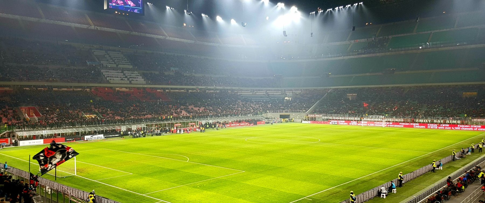
Ischiocrurali, quadricipite, adduttori e tricipite surale hanno una cosa in comune: sono muscoli pennati, con molte fibre rapide di tipo II. Fa eccezione il soleo, a prevalenza di fibre lente. Questa architettura li predispone alle lesioni indirette, da distrazione.
Per chi gestisce l’atleta la domanda è sempre il return to play: quanto tempo resterà fuori dal campo? Tutta la lezione ruota attorno a quali informazioni di imaging aiutano a rispondere.
Nella casistica UEFA (Ekstrand, 2011) le lesioni muscolari sono il 31% degli infortuni con assenza, e il 92% riguarda proprio questi quattro gruppi.
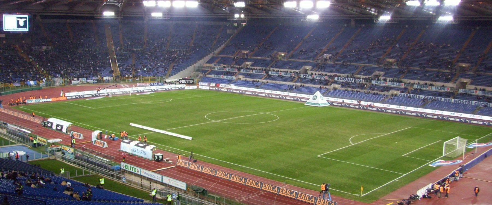
Ogni fibra muscolare è avvolta dall’endomisio: il muscolo è un’alternanza di fibre e connettivo, “un connettivo che richiameremo tantissimo”. Le fibre si raccolgono in fascicoli, circondati dal perimisio. L’intero ventre è avvolto dall’epimisio.
Un concetto che “a volte sfugge anche a certi radiologi”: non esistono un tendine, poi il muscolo, poi il tendine distale. I tendini danno propaggini intramuscolari che entrano nel ventre.
“Se ho una lesione distrattiva qui, al margine del muscolo, come la chiamiamo?” La sala: miofasciale. Esatto, anche se la fascia vera, quella che separa il sottocute dai ventri, è un’altra cosa. Il perché è nella pagina seguente.
La fascia separa il sottocute dai ventri muscolari. Ma istologicamente non si distingue dove finisce la fascia e dove inizia l’epimisio, e lo stesso vale in RM e in ecografia. Per questo non si parla di lesione “dell’epimisio”: si dice lesione miofasciale, sia in italiano sia in inglese, anche quando si è lontani dalla fascia.
Quando cerchi una lesione, segui il connettivo macroscopico: le lesioni le trovi attorno all’epimisio, al tendine, all’aponeurosi. In ecografia il connettivo è bianco, il fascicolo muscolare normale è ipoecogeno.
tendini, aponeurosi, fascia, setti connettivali, corticale ossea; la cicatrice matura
il fascicolo muscolare normale
liquido: l’ematoma che va incontro a liquefazione
edema e sangue nelle prime ore: può mascherare la lesione
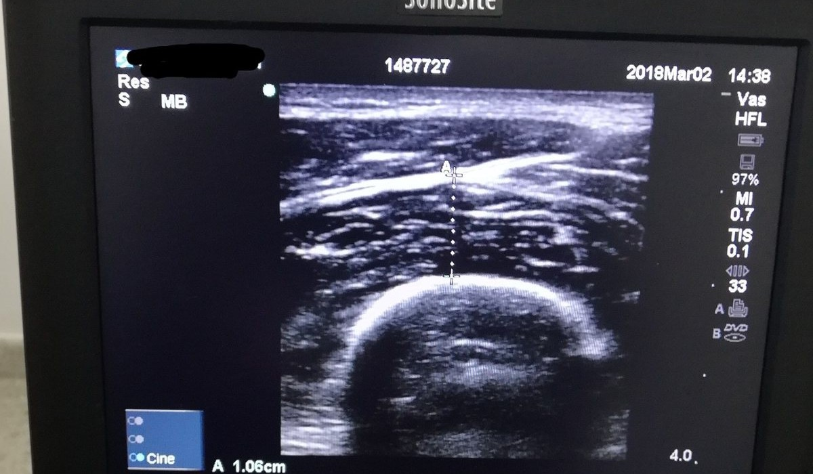
Immagine realeIl muscolo è fibre + connettivo, e i tendini entrano nel ventre. Una lesione periferica si chiama miofasciale. Per trovare le lesioni segui le strutture bianche: epimisio, tendine, aponeurosi.
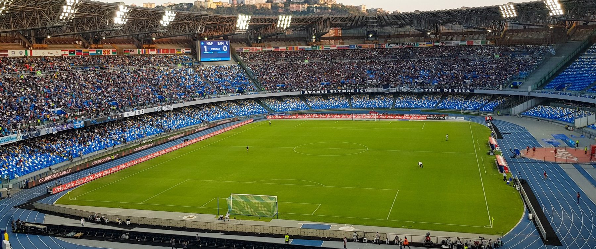
La RM a basso campo è utile per alcune valutazioni articolari, soprattutto delle piccole articolazioni. Ma per le lesioni muscolari dello sportivo, professionista e anche amatoriale, serve l’alto campo con un campo di vista ampio.
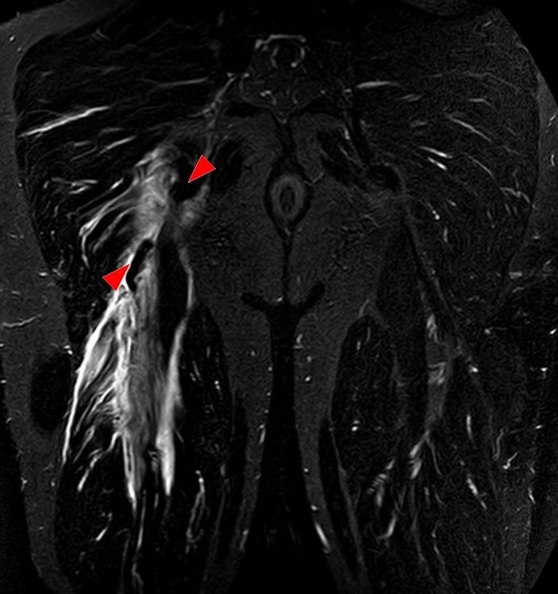
Immagine realeNon c’è un’evidenza forte sul timing. Nei primi 7 giorni la letteratura dice che le caratteristiche di imaging cambiano poco: all’inizio c’è forse un po’ più di edema.
La RM sovrastima: in una lesione clinicamente di basso grado mostra un edema “mostruoso”. Può essere fuorviante, soprattutto nel follow‑up, che il relatore sconsiglia vivamente.
Il radiologo che pensa di fare “semplicemente una fotografia” sbaglia. Davanti a una sospetta lesione distrattiva servono cinque informazioni.
Quando è successoIl timing orienta la lettura dell’ematoma e dell’edema.
Come, e con quale movimentoContrazione in allungamento, allungamento eccessivo, contusione.
Qual è l’arto dominanteConta anche nella prognosi e nel ritorno in campo.
Il punto esatto del dolore“Mettimi il dito qua: voglio sapere dov’è che hai male.”
Dove sono le ecchimosiIl sangue cola: lo trovi distalmente alla lesione.
Raccolta che si palpa come una tumefazione, a volte tesa.
Pensa al segno di Popeye del bicipite brachiale.
Lesione di alto grado, o avulsione tendinea con retrazione.
Nell’ambulatorio del relatore gli specializzandi di radiologia, fisiatria e medicina dello sport visitano il paziente e poi fanno l’ecografia insieme a lui. “Sarebbe bellissimo lavorare tutti così”, anche se un contesto così multidisciplinare è difficile da ricreare.
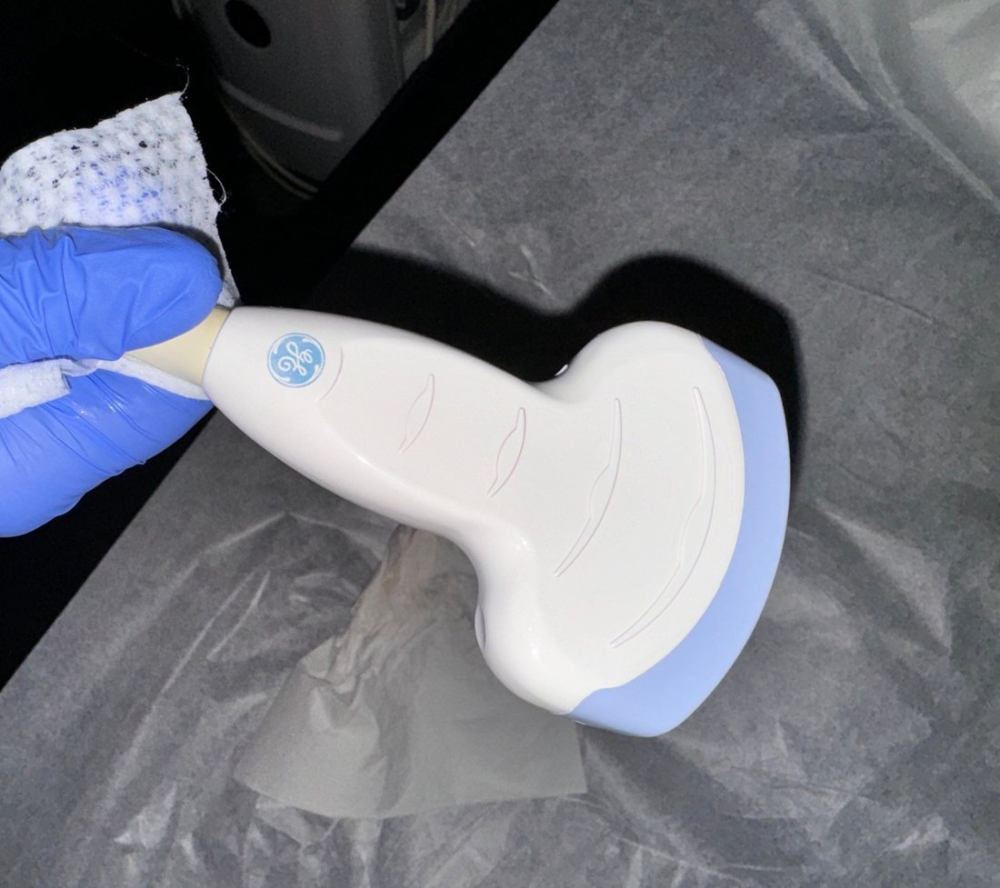
Foto reale · convexLe immagini a campo di vista esteso servono a documentare l’estensione di ematomi e lesioni, soprattutto sulle scansioni longitudinali.
Molti, anche radiologi, impugnano la sonda “come un macete”. Il consiglio: tenerla con due, massimo tre dita, e avere il quarto e quinto dito sulla pelle.
Il motivo: “ecografare un fegato è molto facile, un tendine o un muscolo è molto difficile”. Serve stretto contatto e il massimo controllo per evitare l’anisotropia, nella pagina seguente.
“Il bello dell’ecografia è che ce l’hai in campo”: finito l’allenamento, fai l’eco. Non è sbagliato farla subito: se sospetti un alto grado e vedi l’avulsione, hai già la diagnosi.
Nelle prime 48 ore, e soprattutto nelle prime 6–12, un muscolo lesionato può sembrare normale. Un’eco negativa precoce con clinica suggestiva va ripetuta.
Nella pianta del piede, in mezzo al “marasma” dei ventri muscolari, i tendini sono difficili da riconoscere. Fai tiltare la sonda: le strutture che diventano alternativamente ipo e iperecogene sono i tendini dei flessori.
Clinica, tumefazione, ecchimosi, punto riferito dall’atleta.
Il muscolo intero, dall’inserzione prossimale alla fine.
È lì che si fa la diagnosi: scorri finché trovi il problema.
Trovata la lesione, ruoti per misurarne l’estensione.
Lato sano allo stesso livello, poi studio dinamico.
In aula, un tendine apparentemente normale: “Perché non è normale? È disomogeneo, irregolare, ma soprattutto ha perso tensione”.
È un’informazione che raramente si legge nei referti, ma è utile in riabilitazione: significa che non c’è solo una lesione muscolare, c’è un interessamento tendineo che può allungare i tempi di recupero.
Sembra banale, ma in certi casi è essenziale. Nel retto femorale, allo stesso livello dell’altra coscia, la “virgoletta” dovrebbe esserci ancora: se è già terminata, c’è un interessamento distrattivo del tendine.
Vale anche quando l’iperecogenicità è molto sfumata e può sfuggire, come nell’esempio dell’adduttore breve mostrato in aula.
In allungamento passivo, in contrazione, in compressione. È il concetto della classificazione di Pedret: se il gastrocnemio mediale, ancorato all’aponeurosi che si sta rimarginando, si muove col soleo durante la flessione plantare, è un segno prognostico positivo.
La dinamica distingue anche un tendine sano, un tendine solo deflesso e una cicatrice non funzionale: “dinamicamente vedo che semplicemente non è nulla”.
1. “Il tendine congiunto appare disomogeneo, irregolare, con perdita della normale tensione.”
2. “Rispetto al controlaterale, allo stesso livello, interruzione del tendine intramuscolare del capo indiretto del retto femorale.”
3. “Alla valutazione dinamica, movimento sincrono del gastrocnemio mediale e del soleo in flessione plantare.”
Nel follow‑up delle lesioni muscolari a scopo clinico “non è mai stata utilizzata con criterio”. Il problema principale: non è riproducibile su muscoli e tendini, e uno strumento, per entrare nella pratica clinica, deve esserlo prima di tutto.
Qualche evidenza c’è sulla tendinopatia achillea e sull’epicondilite, ma resta esplorativa. “Le aziende ci devono provare, ma la vedo lunga.”
Un tendine normale non si accende mai al power Doppler. Per questo il Doppler aiuta quando il B‑mode è dubbio, e nel follow‑up delle lesioni per capire se la cicatrice si è stabilizzata.
L’ipervascolarizzazione della tendinopatia non è tessuto infiammatorio: è un tentativo di riossigenazione e cicatrizzazione di un tendine degenerato.
Nessun segnale nel box colore: non si accende mai.
Achilleo o epicondilite con B‑mode negativo: il Doppler si accende.
Tessuto che si sta riformando, ancora vascolarizzato: non stabile.
Bianca, stellata, iperecogena, senza segnale Doppler.
In aula: un gracile con lesione miofasciale mediale non recente, dove il tessuto si sta riformando ma c’è ancora vascolarizzazione. Cicatrice ancora immatura. Il Doppler ha un ruolo anche nelle entesiti infiammatorie, ma lì si entra nella reumatologia.
L’eco non è una fotografia: senza anamnesi ed ecchimosi cerchi nel posto sbagliato.
Perdi il controllo dell’angolo e crei anisotropia.
Un’area ipoecogena che cambia inclinando la sonda non è una lesione.
Il sangue iperecogeno maschera: con clinica suggestiva si ripete.
Il muscolo va studiato tutto, in asse corto, e confrontato.
Non è riproducibile sul muscolo: oggi non guida le decisioni.
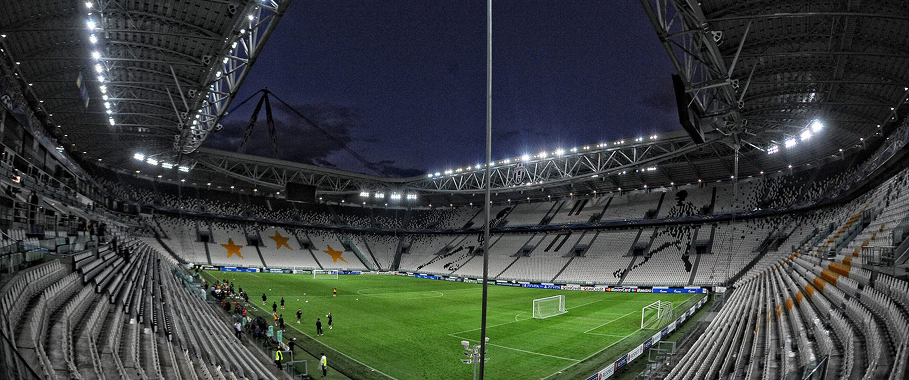
In RM la lesione distrattiva ha un aspetto “piumato”: l’edema va a disegnare gli spazi interfibrillari. È il quadro tipico delle lesioni miotendinee, miofasciali, muscolari.
In ecografia, se c’è solo edema, senza un buco e senza una vera rottura delle fibre, il corrispettivo è semplicemente un’iperecogenicità diffusa.
Un buco lontano dal connettivo macroscopico: niente fascia, tendine o aponeurosi accanto. Di solito nasce comunque da un prolungamento aponeurotico.
Interruzione dell’epimisio con sanguinamento intermuscolare di entità variabile, lungo la fascia.
Lungo una propaggine tendinea, anche intramuscolare: tutto attorno l’edema “piumato”, il tendine resta continuo.
Interruzione del tendine, intramuscolare o fino all’avulsione, con perdita di tensione ed eventuale retrazione.
Parlare di interessamento tendineo non significa solo avulsione: comprende l’interruzione del tendine intramuscolare, come nel retto femorale, visibile sia nella scansione trasversa sia in quella coronale, più panoramica.
Nell’avulsione vera guarda due cose. La perdita di tensione: “quel tendine non lavora più”. E l’entità della retrazione, che può avere implicazioni chirurgiche.
Un calciatore di 12 anni, con le cartilagini di accrescimento ancora aperte, calcia: il retto femorale tira e si stacca l’apofisi della spina iliaca antero‑inferiore. Avulsioni con distacco oltre 1,5–2 cm hanno una potenziale indicazione chirurgica: un dato da dare, e si può provare a darlo con l’ecografia.
“Vi ho stressato con il concetto del connettivo macroscopico”, perché è un’informazione prognostica: più il connettivo è coinvolto, peggiore è la prognosi. Aumentano i tempi di recupero e il rischio di recidiva.
Dire “lesione miotendinea con interruzione del capo indiretto del retto femorale” è una cosa. Dire “lesione miofasciale” allo stesso livello dello stesso muscolo è già un’altra.
Conta anche la sede nel ventre. Nel retto femorale una lesione prossimale è prognosticamente più sfavorevole della distale; nel gastrocnemio, dice il relatore, vale il contrario. Più scuro = peggio.
Avulsione con retrazione di circa 1 cm, ben visibile anche in dinamica: non è stato operato.
Un’avulsione completa (BAMIC 4c) può invece arrivare alla chirurgia.
Davanti a una “bella ginocchiata di coscia” bisogna capire se c’è solo una soffusione emorragica o se si è formato un ematoma.
Dire quanta è la componente fluida cambia la gestione dell’atleta: in casi selezionati c’è indicazione all’aspirazione ecoguidata.
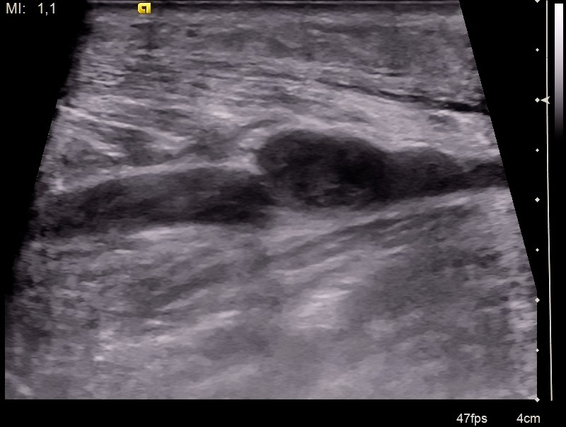
Immagine realeÈ la classica tennis leg. Qui si incontrano più concetti della lezione: la raccolta segue il piano tra i due ventri, la valutazione dinamica con la flessione plantare dice se gastrocnemio e soleo si muovono insieme, e il Doppler va usato anche per cercare una trombosi delle vene gemellari e della poplitea (capitolo 6).
L’indolenzimento muscolare a insorgenza ritardata si vede spesso negli atleti in RM: un edema diffuso nei ventri muscolari, con sintomi più tardivi. Si riassorbono spontaneamente sia l’edema sia il dolore.
Raramente si vedono quadri ecografici eclatanti, ma un edema omogeneo che non segue il connettivo macroscopico, con la sintomatologia tipica, fa fare diagnosi.
Descrivi dove si rompe il muscolo rispetto al connettivo: intramuscolare, miofasciale, miotendinea, tendinea. Nel tendine cerca tensione e retrazione. Nella contusione distingui soffusione da ematoma e quantifica il fluido. Nei DOMS l’edema è omogeneo e non segue il connettivo.
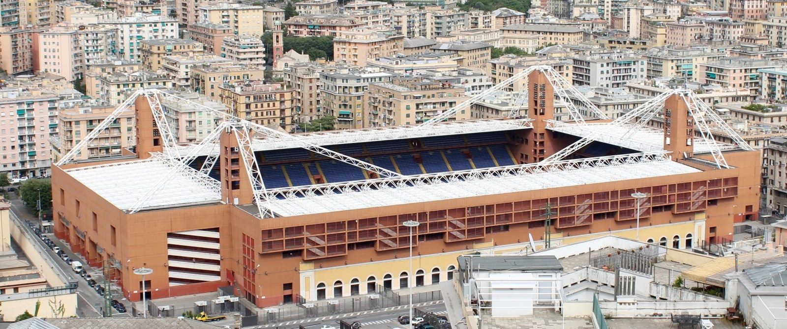
Per i gradi 1–3 la BAMIC usa l’estensione dell’edema in RM: 1 sotto il 10% dell’area di sezione e sotto i 5 cm di lunghezza; 2 tra 10 e 50%, 5–15 cm; 3 oltre il 50% o oltre i 15 cm. Il suffisso descrive la sede rispetto al connettivo, esattamente come nel capitolo 4.
La BAMIC è una classificazione di risonanza: in aula le lesioni sono state mostrate affiancate al corrispettivo ecografico solo per confronto, ma “non si dovrebbe utilizzare in ecografia”.
Peetrons e Takebayashi, nella sostanza, chiedono la stessa cosa. In sintesi, come l’ha messa il relatore:
“Se mi arriva un’ecografia di coscia per lesione distrattiva, non scrivo BAMIC 2a del semitendinoso e finisce lì.” Bisogna dire dov’è, a che altezza, quanto è grande, la sezione trasversa, l’estensione longitudinale. Sono “due righe di referto”, non di più.
“Direi di no.” Se la clinica è compatibile con una lesione di basso grado, si può non passare alla risonanza, anche se un edema sfumato visibile in RM all’ecografia può essere impercettibile, soprattutto se l’esame è molto precoce.
Le classificazioni hanno un ruolo predittivo, ma non bastano: “me lo insegnate voi”, dice il relatore alla platea di clinici. L’interessamento tendineo pesa, ma poi contano l’età, l’arto dominante, il muscolo, lo sport, il ruolo.
E non sono mai abbastanza perché ogni ventre muscolare ha storia a sé: per questo sono nate classificazioni per singoli muscoli, come la Pedret per il gastrocnemio mediale. “Diventa sempre più complicato.”
Scegliete in équipe una classificazione che vada bene per tutti i pazienti gestiti da quei colleghi. Serve a comunicare.
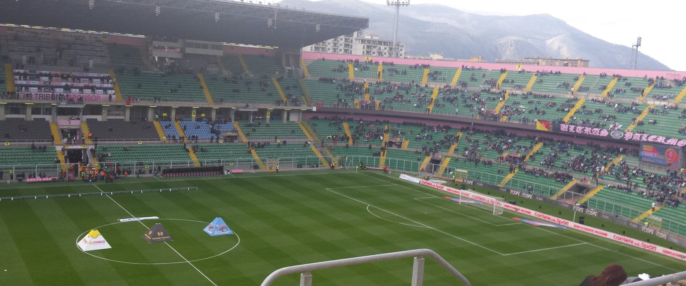
In sala molti alzano la mano: seguono le lesioni muscolari con l’eco, “tutte”. Per gioco è interessante, ma seguirle tutte “non è così utile”.
Nel monitoraggio ecografico si guarda la cicatrice con il power Doppler e poi dinamicamente: la lesione si apre ai margini? Si muove in modo sincrono con la fascia o con il ventre sottostante?
ancora vascolarizzata al power Doppler, non stabile
bianca, stellata, iperecogena, senza Doppler
La cicatrice matura è bianca in ecografia, soprattutto quando “fa troppa cicatrice”, ma è nera in RM, “nera come il tendine”. Per questo il monitoraggio ecografico ha molto più senso di quello in risonanza.
È un punto di minore elasticità: attorno si possono avere le recidive. Il relatore ricorda un polpaccio “crivellato” di cicatrici, con recidive continue attorno.
In RM si vede un edema diffuso e “non ci capite niente”: le calcificazioni non si vedono, neanche all’inizio. L’eco le vede precocemente, come l’RX. Presa presto si tratta correttamente.
Focale o di un intero gruppo. Cause: perdita di tensione del tendine, il muscolo è “come disinserito”, oppure denervazione.
Soprattutto nella tennis leg: tra le complicanze più frequenti, a carico delle vene gemellari e della poplitea. Non basta il Doppler: comprimi.
Non frequente; sede tipica il tibiale anteriore, per i vasi perforanti. Non tutte si vedono in contrazione: alcune compaiono in rilasciamento.
Calcificazioni e tutto ciò che è dinamico: non chiedete la risonanza, chiedete l’ecografia.
“Trombosi venosa profonda: cercatela sempre, e soprattutto se fate un gastrocnemio.” Nel sospetto di lesione distrattiva del gastrocnemio mediale è una delle complicanze più frequenti: vene gemellari e poplitea.
Nei flessori, una lesione profonda degli hamstring può coinvolgere il nervo sciatico, che decorre sotto il bicipite femorale. Il tessuto cicatriziale può inglobare lo sciatico o le diramazioni che vanno al ventre muscolare: il risultato è una denervazione, con atrofia e infiltrazione adiposa del muscolo a valle.
Sede più frequente il tibiale anteriore, nella loggia antero‑laterale di gamba: una questione anatomica legata ai vasi perforanti, che attraversano la fascia. Ma si possono formare un po’ ovunque.
Non tutte si vedono in contrazione: alcune si vedono meglio in rilasciamento, a seconda che siano al centro o alla fine del ventre.
Non si vede. Al massimo la si sospetta perché il tecnico ha messo un repere sulla tumefazione. “L’ernia la vedo in ecografia, non in risonanza.”
Segui con l’eco solo quando serve: lesione che non combacia con la clinica, decisioni riabilitative, ematoma voluminoso. Mai la RM in follow‑up. Cicatrice matura = bianca, stellata, senza Doppler. Cerca sempre la TVP nella tennis leg, comprimendo a muscolo rilassato. Calcificazioni, ernie e tutto ciò che è dinamico: ecografia.
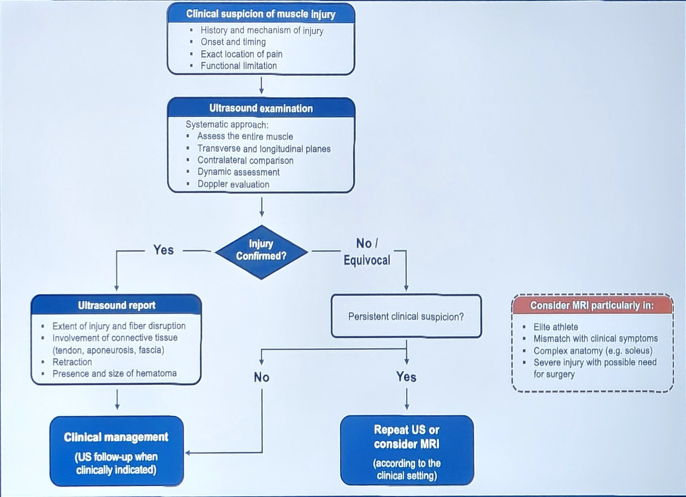
Slide fotografata in aula“Riassume quello che vi ho detto in questa presentazione.” Si parte dalla clinica, si fa un’ecografia sistematica e ci si chiede se la lesione è confermata.
Se sì: si referta con la checklist e si gestisce il paziente, nella maggior parte dei casi senza bisogno di RM.
Se no o dubbio: si rivaluta criticamente. Se il sospetto è basso o al massimo di basso grado si può evitare la RM; se è forte, si ripete l’eco o si pensa alla RM.
Atleta d’élite
Discrepanza importante tra clinica ed eco negativa
Anatomia complessa: il soleo, “pericolosissimo”, con le sue aponeurosi
Possibile chirurgia: al chirurgo serve un’immagine riproducibile e rivedibile
“Possiamo anche evitarci la risonanza”: in un paziente con clinica positiva ma eco negativa e sospetto al massimo di basso grado.
Ecograficamente “non lo studiamo bene”: tra l’aponeurosi centrale e quelle laterali è anatomicamente difficile, e le lesioni in eco “ce le perdiamo”.
“Sembra una cosa complicatissima, in realtà è quello che ci siamo detti.” Otto voci, che alla fine sono due righe di referto.
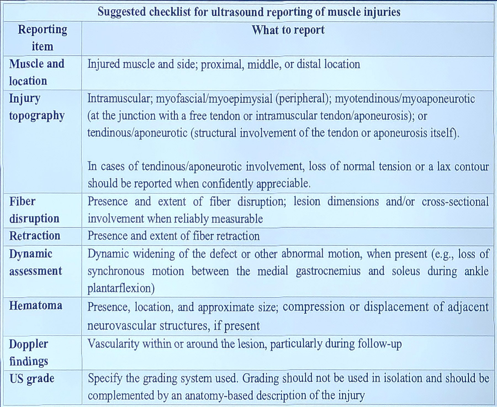
Slide in aula1. Più in alto: il sangue cola distalmente, quindi pensa a una lesione prossimale degli ischiocrurali.
2. Perché istologicamente, e in RM ed eco, non si distingue dove finisce la fascia e dove inizia l’epimisio.
3. Nelle prime 6–12 ore il sangue iperecogeno può mascherare la lesione: rivaluta e, se il sospetto è forte, ripeti l’eco o considera la RM.
4. Di un artefatto da anisotropia: muscoli e tendini cambiano ecogenicità con l’angolo del fascio.
5. Diagnosi in asse corto (anche per l’area di sezione), estensione in asse lungo.
6. La tendinea: più il connettivo è coinvolto, più aumentano giorni di stop e rischio di recidiva.
7. Distale: la lesione prossimale del retto femorale è prognosticamente più sfavorevole.
8. No: è una classificazione di risonanza. In eco si usa un grado ecografico più una descrizione anatomica.
9. La TVP di gemellari e poplitea: compressione, non solo Doppler, a muscolo rilassato con il piede fuori dal lettino.
10. Ecografia (e RX): la RM mostra solo edema diffuso e non vede le calcificazioni iniziali.
Il contenuto viene dalla registrazione della sessione e dalle due slide fotografate in aula. I box “Approfondimento” e le classificazioni citate si basano su questi lavori.
Immagini ritagliate, ridimensionate, annotate o virate in bicromia. Le licenze CC BY‑SA si applicano alle immagini adattate. Tutte le altre illustrazioni sono schemi originali, non immagini reali.
Dispensa ricostruita dalla trascrizione automatica della sessione della Health Performance Academy, Stadio Renzo Barbera, Palermo, 27 settembre 2026. Non sostituisce linee guida né valutazioni cliniche individuali.